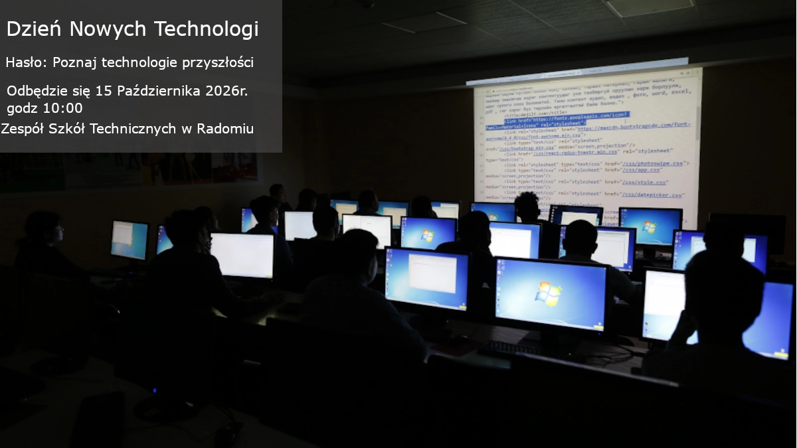

Moja grafika przedstawiająca zaproszenie na wydarzenie.
W grafice użyłem dwóch rodzajów czcionek. Tytuł jest największy, Żeby było widać najważniejszą informacje. Pozostałe informacje są mniejsze.
Zastosowałem trzy poziomy tekstu:
Jest tez zastosowany duży kontrast
Myślę, że projekt wykonałem dobrze. Grafika jest czytelna, informacje są dobrze rozmieszczone i zastosowałem odpowiedni kontrast. Przygotowałem też wersję na telefon.
Moja ocena: 5/5